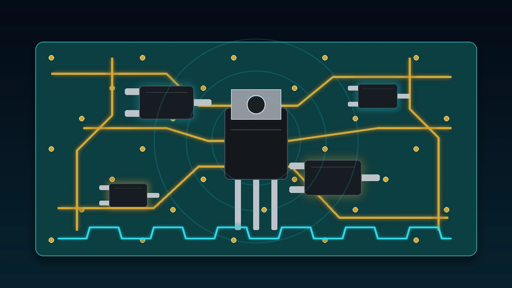
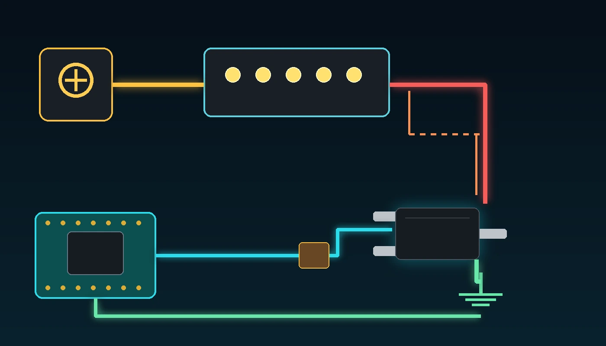
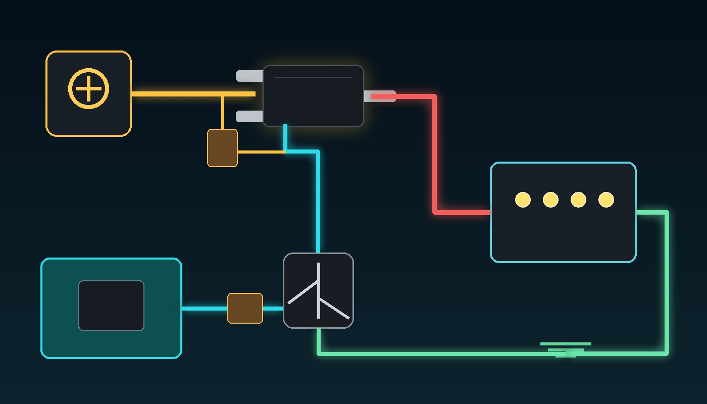

آموزش مسئلهمحور الکترونیک کاربردی
این درس از تعریفهای طولانی شروع نمیشود. ابتدا با یک مسئله کوچک روبهرو میشویم: چطور یک بار ۱۲ ولت را با خروجی ۳٫۳ ولتی ESP32 روشن، خاموش و کموزیاد کنیم؟ در مسیر حل همین مسئله، پایههای ماسفت، VGS، مقاومت روشن، گرما، PWM و خواندن دیتاشیت را یاد میگیریم. بعد یک مسئله جدید ایجاد میکنیم تا دلیل استفاده از PMOS را عملاً ببینیم.
نقطه شروع
فرض کنید یک نوار LED یا یک بار ۱۲ ولت با جریان حدود ۱ آمپر داریم. میخواهیم آن را با GPIO18 روشن و خاموش کنیم. نخستین فکر ممکن است این باشد که بار را مستقیم به پایه ESP32 وصل کنیم؛ اما GPIO برای انتقال توان ساخته نشده است. پایه میکروکنترلر فقط باید فرمان بدهد و مسیر اصلی جریان بار باید از قطعه دیگری عبور کند.
بار ۱۲ ولت و پرجریان مستقیماً به GPIO وصل شود.
نتیجه احتمالی: آسیب GPIO یا کل برد.
GPIO فقط کلید الکترونیکی را کنترل کند و جریان بار از منبع ۱۲ ولت عبور کند.
قطعهای که اینجا نیاز داریم: MOSFET.
ماسفت را مثل یک کلید سهپایه در نظر بگیرید. یک پایه فرمان میگیرد و دو پایه دیگر مسیر عبور جریان بار را میسازند. جزئیات را زمانی توضیح میدهیم که در مدار به آنها نیاز پیدا کنیم.
آزمایش اول

برای شروع از نوار LED یا بار مقاومتی استفاده کنید. بارهای القایی مانند موتور، پمپ، رله و شیر برقی هنگام قطع شدن پالس ولتاژ ایجاد میکنند و به دیود هرزگرد نیاز دارند.
#include "driver/gpio.h"
#include "freertos/FreeRTOS.h"
#include "freertos/task.h"
#define MOSFET_GATE GPIO_NUM_18
void app_main(void)
{
gpio_reset_pin(MOSFET_GATE);
gpio_set_direction(MOSFET_GATE, GPIO_MODE_OUTPUT);
gpio_set_level(MOSFET_GATE, 0);
while (1) {
gpio_set_level(MOSFET_GATE, 1); // بار روشن
vTaskDelay(pdMS_TO_TICKS(2000));
gpio_set_level(MOSFET_GATE, 0); // بار خاموش
vTaskDelay(pdMS_TO_TICKS(2000));
}
}| وضعیت GPIO | ولتاژ تقریبی Gate نسبت به Source | رفتار ماسفت | وضعیت بار |
|---|---|---|---|
| صفر | تقریباً ۰ ولت | خاموش | خاموش |
| یک | تقریباً ۳٫۳ ولت | روشن | روشن |
حالا مفهوم را از روی مدار استخراج کنیم
پایه فرمان است و از GPIO سیگنال میگیرد. در حالت ثابت تقریباً جریان DC قابل توجهی مصرف نمیکند، اما هنگام تغییر وضعیت باید شارژ و تخلیه شود.
در این مدار به منفی بار متصل شده است. هنگامی که ماسفت روشن میشود، جریان بار از Drain به Source عبور میکند.
در مدار Low-side به زمین وصل است و مرجع واقعی ولتاژ Gate محسوب میشود.
ماسفت با ولتاژ Gate نسبت به Source کنترل میشود. این ولتاژ را VGS مینامیم. در مدار ما Source روی زمین است؛ بنابراین Gate برابر ۳٫۳ ولت یعنی VGS تقریباً ۳٫۳ ولت.
هنگام روشن شدن یا Reset شدن ESP32، پایه GPIO ممکن است برای چند لحظه ورودی و بدون وضعیت مشخص باشد. Gate ماسفت مثل یک خازن کوچک میتواند شارژ باقیمانده نگه دارد. مقاومت ۱۰۰ کیلو اهم Gate را به Source میکشد تا ماسفت به صورت پیشفرض خاموش بماند.
هنگام تغییر وضعیت، GPIO باید ظرفیت Gate را شارژ یا تخلیه کند. مقاومت سری جریان لحظهای را محدود میکند و به کاهش نوسان و نویز کمک میکند. برای این آزمایش ۲۲۰ اهم مقدار مناسبی است، اما در PWM سریع مقدار دقیق باید با بار Gate، فرکانس و سرعت مورد نیاز بررسی شود.
دیتاشیت را فقط برای تصمیمهای واقعی بخوانیم
ما قرار نیست تمام دیتاشیت را حفظ کنیم. فقط سؤالهایی را میپرسیم که برای مدار ۱۲ ولت و GPIO سهولتوسه لازم است.
در دیتاشیت مقدار VDS برابر ۳۰ ولت است. بنابراین از نظر ولتاژ اسمی برای مدار ۱۲ ولت مناسب است؛ با این حال در بار القایی باید پالسهای ولتاژ مهار شوند.
دیتاشیت مقاومت روشن RDS(on) را در VGS برابر ۲٫۵ ولت نیز مشخص کرده است: حداکثر حدود ۴۸ میلیاهم. این موضوع بسیار مهمتر از VGS(th) است، چون VGS(th) فقط شروع هدایت با جریان بسیار کم را نشان میدهد.
با استفاده از بدترین مقدار ۴۸ میلیاهم، تلفات هدایتی را حساب میکنیم.
P = I² × R
P = 1² × 0.048
P = 0.048 Wحدود ۴۸ میلیوات تلفات برای شروع کم است. اما در ۲ آمپر، تلفات چهار برابر میشود:
P = 2² × 0.048 = 0.192 Wاین عدد در شرایط حرارتی و برد مشخص اندازهگیری شده است. نباید نتیجه بگیریم که هر AO3400A روی هر PCB بدون بررسی دما میتواند دائماً ۵٫۷ آمپر عبور دهد. سطح مس، دمای محیط، کیفیت مونتاژ و مدت زمان عبور جریان تعیینکنندهاند.
حد مطلق VGS برابر ±۱۲ ولت است. در مدار ۳٫۳ ولتی فاصله زیادی با این حد داریم.
| پارامتر دیتاشیت | سؤال عملی ما | مقدار AO3400A |
|---|---|---|
| VDS | آیا ۱۲ ولت را تحمل میکند؟ | ۳۰ ولت |
| RDS(on) در VGS=2.5V | با GPIO سهولتوسه چقدر افت و گرما داریم؟ | حداکثر ۴۸ میلیاهم |
| RDS(on) در VGS=4.5V | با درایو قویتر چه تغییری میکند؟ | حداکثر ۳۲ میلیاهم |
| VGS(max) | Gate تا چه ولتاژی آسیب نمیبیند؟ | ±۱۲ ولت |
| Qg در 4.5V | در PWM شارژ Gate چقدر است؟ | حدود ۷ نانوکولن |
| RθJA | برد و دفع گرما چقدر مهماند؟ | وابسته به PCB؛ حدود ۱۲۵ درجه بر وات در حالت پایدار مرجع |
مسئله را یک مرحله سختتر کنیم
اکنون همان مدار را نگه میداریم و GPIO را با PWM کنترل میکنیم. ماسفت بار را با سرعت چند هزار بار در ثانیه روشن و خاموش میکند. چشم انسان میانگین نور را میبیند؛ بنابراین با تغییر Duty Cycle، روشنایی تغییر میکند.
#define PWM_FREQUENCY_HZ 5000
#define PWM_MAX_DUTY 1023
static void pwm_set_percent(uint32_t percent)
{
if (percent > 100) {
percent = 100;
}
uint32_t duty = (PWM_MAX_DUTY * percent) / 100;
ledc_set_duty(LEDC_LOW_SPEED_MODE, LEDC_CHANNEL_0, duty);
ledc_update_duty(LEDC_LOW_SPEED_MODE, LEDC_CHANNEL_0);
}در روشن و خاموش شدن آهسته، ظرفیت Gate تقریباً مسئله بزرگی نبود. در PWM، پارامتر Qg یا Gate Charge اهمیت پیدا میکند. هرچه Qg بیشتر باشد، GPIO یا درایور باید بار بیشتری را در هر سیکل جابهجا کند و زمان عبور ماسفت از ناحیه نیمهروشن بیشتر میشود.
در Dutyهای ۲۵، ۵۰، ۷۵ و ۱۰۰ درصد، جریان ورودی و دمای ماسفت را ثبت کنید. فایل ثبت اندازهگیری داخل بسته دانلود قرار دارد.
یک خطای واقعی در پروژهها
بار القایی هنگام عبور جریان انرژی ذخیره میکند. وقتی ماسفت ناگهان خاموش میشود، این انرژی تلاش میکند جریان را ادامه دهد و میتواند ولتاژ Drain را شدیداً بالا ببرد. به همین دلیل یک دیود هرزگرد موازی بار قرار میدهیم.
در حالت عادی دیود باید معکوس باشد؛ یعنی کاتد به مثبت منبع و آند به سمت Drain یا منفی بار متصل شود. دیود باید از نظر جریان، سرعت و انرژی با بار انتخاب شود.
اینجا متوجه میشویم که VDS برابر ۳۰ ولت به تنهایی تضمین کافی نیست. برای بار ۱۲ ولت القایی، دیود، TVS، مسیرهای کوتاه و بررسی شکل موج با اسیلوسکوپ اهمیت دارند.
مسئله شماره ۲
فرض کنید یک سنسور یا ماژول ۵ ولتی به ESP32 وصل است و خطوط داده آن باید زمین مشترک داشته باشند. اگر تغذیه را از سمت زمین با NMOS قطع کنیم، مسیرهای سیگنال ممکن است ماژول را به شکل ناخواسته از طریق پایههای داده تغذیه کنند. راه بهتر این است که مثبت ۵ ولت را قطع کنیم. اینجا PMOS وارد میشود.

Source ماسفت روی ۵ ولت است. برای خاموش شدن PMOS، Gate باید تقریباً به همان ۵ ولت برسد؛ اما GPIO ESP32 حداکثر ۳٫۳ ولت خروجی میدهد. اگر Gate مستقیم به GPIO وصل شود، در حالت High نیز VGS برابر ۳٫۳ منهای ۵، یعنی حدود منفی ۱٫۷ ولت میشود و ممکن است ماسفت کاملاً خاموش نشود. بنابراین یک ترانزیستور NPN کوچک Gate را پایین میکشد و مقاومت Pull-up آن را هنگام خاموشی به Source برمیگرداند.
static void load_power_set(bool enabled)
{
// در این مدار GPIO=1 باعث روشن شدن NPN و سپس PMOS میشود.
gpio_set_level(GPIO_NUM_19, enabled ? 1 : 0);
}دیتاشیت دوم، فقط برای همین مدار
| سؤال | پارامتر | پاسخ دیتاشیت AO3401A |
|---|---|---|
| آیا ریل ۵ ولت را تحمل میکند؟ | VDS | منفی ۳۰ ولت |
| در VGS حدود منفی ۵ ولت چقدر مقاومت دارد؟ | RDS(on) در −4.5V | حداکثر حدود ۶۰ میلیاهم |
| در ریل کمولتاژ هم قابل استفاده است؟ | RDS(on) در −2.5V | حداکثر حدود ۸۵ میلیاهم |
| حد آسیب Gate چیست؟ | VGS(max) | ±۱۲ ولت |
| برای سوئیچینگ Gate چقدر بار دارد؟ | Qg در 4.5V | حدود ۷ نانوکولن |
P = I² × R
P = 0.8² × 0.060
P ≈ 0.038 Wاگر Source روی ۱۲ ولت باشد و NPN Gate را تا صفر پایین بکشد، VGS تقریباً منفی ۱۲ ولت میشود؛ یعنی دقیقاً روی حد مطلق دیتاشیت. در محصول واقعی باید کلمپ زنر، شبکه محدودکننده یا درایور High-side مناسب در نظر گرفته شود.
جمعبندی بر اساس کاربرد
| نیاز مدار | انتخاب معمول | دلیل |
|---|---|---|
| کنترل موتور، LED، رله یا پمپ از سمت زمین | NMOS Low-side | درایو ساده با GPIO و مقاومت روشن معمولاً کمتر |
| PWM سریع و پرتلفات پایین | NMOS | معمولاً انتخابهای بهتر و RDS(on) پایینتر دارد |
| قطع مثبت تغذیه یک ماژول | PMOS High-side | زمین بار مشترک میماند |
| High-side با ولتاژ یا جریان بالا و PWM سریع | NMOS همراه درایور High-side | بازده بهتر از PMOS، اما مدار پیچیدهتر |
تمرین عملی
دانشجو باید بتواند بدون حفظکردن تعریفها، از روی ولتاژهای اندازهگیریشده توضیح دهد چرا NMOS یا PMOS روشن و خاموش شده است.
عیبیابی
قبل از انتخاب قطعه، فقط به این هفت سؤال پاسخ دهید:
دانلود کدهای ESP-IDF، دیتاشیت AO3400A و AO3401A، BOM و برگه ثبت اندازهگیری
با یک مشکل کوچک شروع کردیم، AO3400A را به صورت NMOS Low-side بستیم، VGS و RDS(on) را هنگام نیاز از دیتاشیت استخراج کردیم، PWM را اضافه کردیم، خطر بار القایی را شناختیم و سپس برای قطع مثبت تغذیه، مدار PMOS High-side با AO3401A ساختیم. حالا پارامترهای دیتاشیت دیگر مجموعهای از اعداد جدا از مدار نیستند؛ هر پارامتر پاسخ یک سؤال طراحی واقعی است.